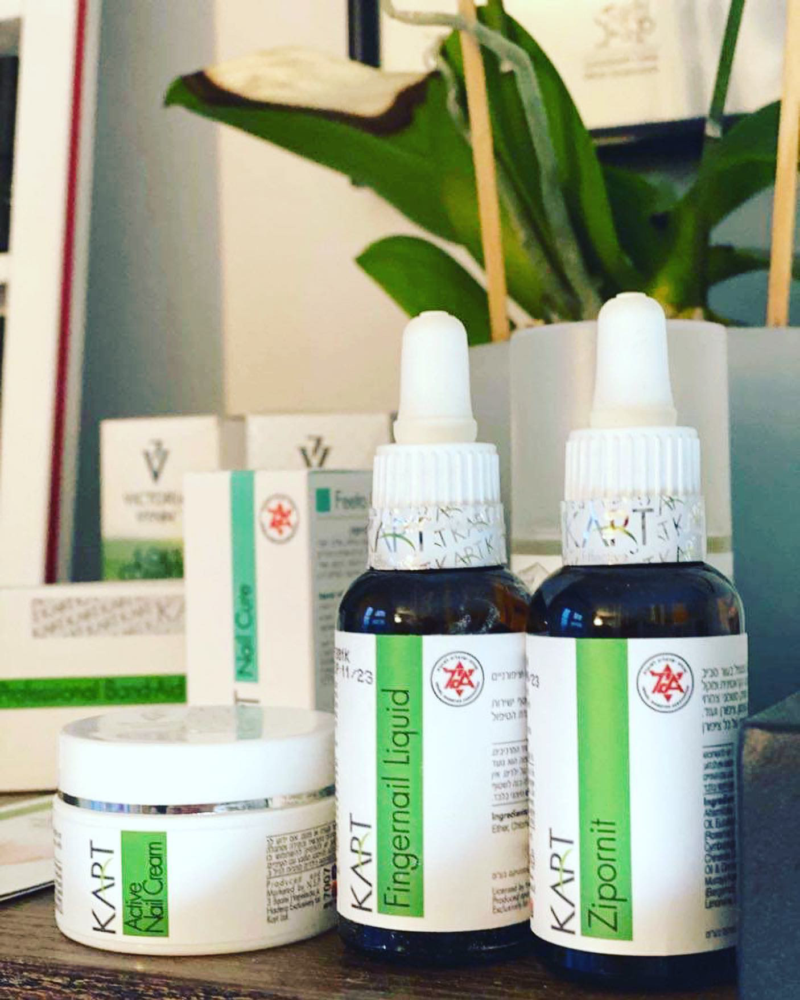
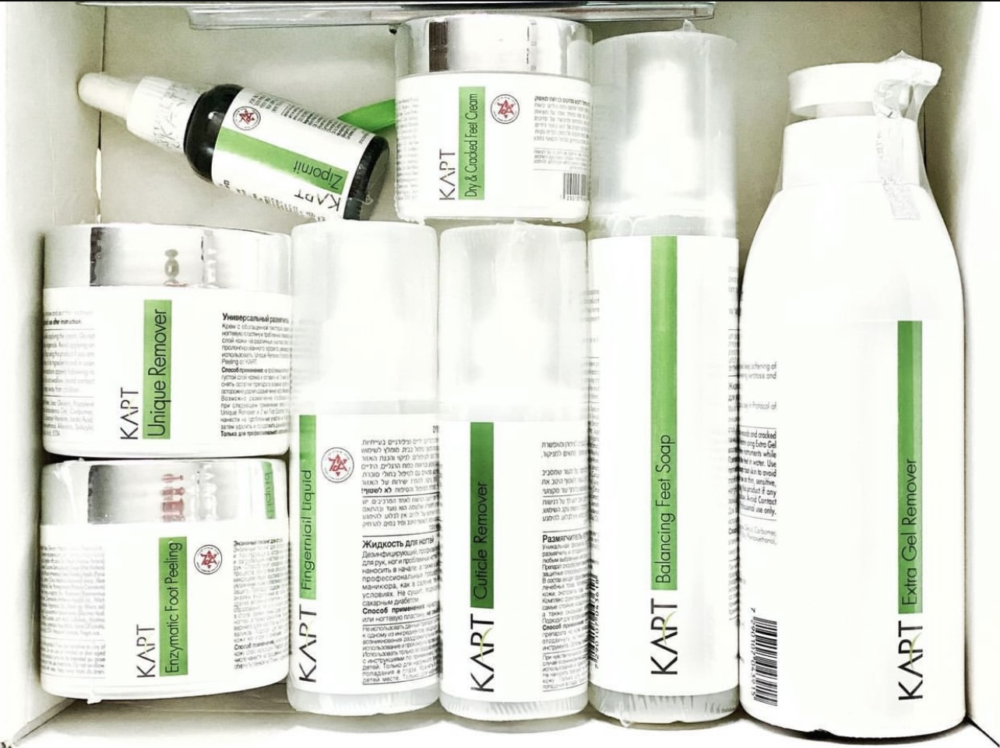

Targeted care
KART pedicure
Focused pedicure care using the professional KART product range for smoother-feeling feet.
KART pedicure treatments in Hampton
Professional KART foot-care products paired with close, practical attention in a private studio.

Targeted foot care
KART treatments use a professional foot-care range from Israel and are designed for clients who want focused care for dry or hard skin. Each appointment is selected around the condition of your feet and the finish you prefer.
Real work
Treatment photography from the original KART, callus-care and men's pedicure pages.

Your appointment
Focused treatment in a private setting, with the product choice and finish adapted to your feet.
The condition of your feet and the result you want are considered before treatment begins.
Products and preparation are selected for dry skin, hard skin or your chosen pedicure finish.
You leave with straightforward advice to help maintain comfort between appointments.
Helpful to know
It is a targeted pedicure using the professional KART foot-care range, selected for clients who want focused care for dry or hard skin.
Yes. Choose KART pedicure with colour to include a new colour application.
No. KART is a cosmetic foot-care treatment. Medical Pedicure has a separate assessment-led treatment menu for specific nail and skin concerns.
Your appointment
Private KART pedicure appointments in Hampton, by appointment only.
Book now